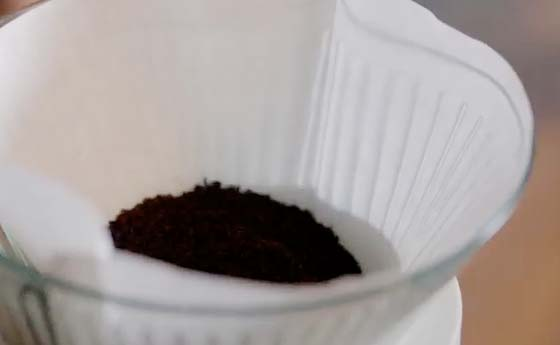
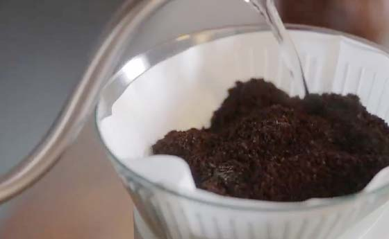
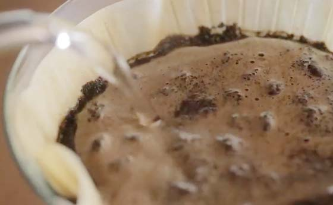
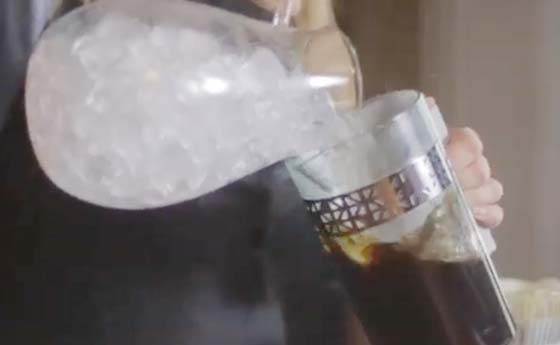

1. Pre-moisten filter
Briefly rinse the paper filter with hot water, and discard the rinsed water. This will give your coffee the purest flavor possible.
2. Choose the right grind
For pour-over, use coffee ground for a paper cone. It’s a relatively fine grind that looks like granulated sugar.3. Measure
Iced pour-over is brewed at double strength and diluted with ice, so measure 4 tablespoons of coffee for every 6 ounces of hot water.
4. Pour and pause
Use hot water that’s just off the boil and fill the cone halfway to saturate the grounds. Pause for 10 seconds and let the coffee bloom. This lets it hydrate evenly and begin to develop flavor.
5. Complete the pour
Slowly add the rest of the water, pouring in small, steady circles to cover all the grounds.